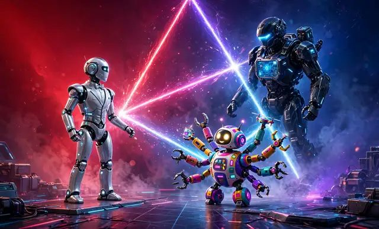

wswin 首页 / AI 教程 · 智能体
AI 教程 · 智能体
下半年 AI 圈最值得看的一场战争，不是模型跑分，而是"个人助理"这个入口的争夺战。Meta 的 Muse、Manus 的 Cue、Grok Bot，三家几乎同时把牌打到了桌上。
先看 Manus 的 Cue Agents。它的设计哲学很有意思：让 Agent 越来越像一个"人"——拥有自己的手机、邮箱、支付和电脑。Manus 过去 18 个月做了 60 多次重大更新，积累到 2.0 版本才推出这款个人助理产品，显然是憋了个大招。
Meta 的 Muse 则走了另一条路。据扎克伯格在播客里的阐述，Muse 的理念是让用户"只有一个 agent"，像管家一样处理所有事情，而不是创建一堆 agent 让用户眼花缭乱。Meta 手里的牌很全：芯片、基础设施、基础模型、应用，一整条技术栈都是自己的。有分析者提醒，Muse 最大的风险恰恰在于小扎"想得太完善"——很像当年那个卡在技术不成熟上的元宇宙，个人助理会不会卡在别的什么地方，还要观察。
Grok Bot 的打法最"野"：多 Agent 调度。有博主实测把 Claude Code、Codex 等一众 Agent 全部接入 Grok Bot，让它只做总调度，自己手里只留一个入口，用"Agent 军团"的方式干活。一句话提示词做出 AE 级动效视频的案例，用的就是这套架构。
民间玩法也没闲着。有人在 Muse 里"套娃"：接入 DeepSeek Harness 做中文搜索、接入绘画和视频生成的 CLI，一个 Agent 叠出 N 种能力；还有人把 Muse 的云端虚拟机和本地电脑打通，一句话就在本机生成文件、写入 Obsidian 知识库。
三条路线其实对应三种想象：Cue 想给你一群"数字员工"，Muse 想给你一个"数字管家"，Grok Bot 想给你一个"调度台"。对普通人来说，现在不用急着站队——先想清楚你最想甩掉哪件重复性工作，再去看哪家的助理离你的场景最近。入口之争的红利，永远属于先用起来的人。
灵感来源：X @starzq、@xiaohu、@FuSheng_0306、@lifesinger、@KinGao476942、@op7418 等多位博主的讨论（部分产品细节与数据为博主转述，未经独立核实）。